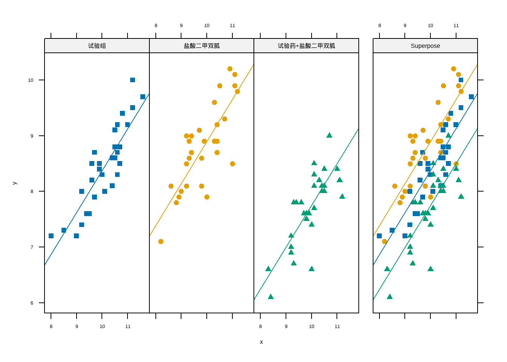
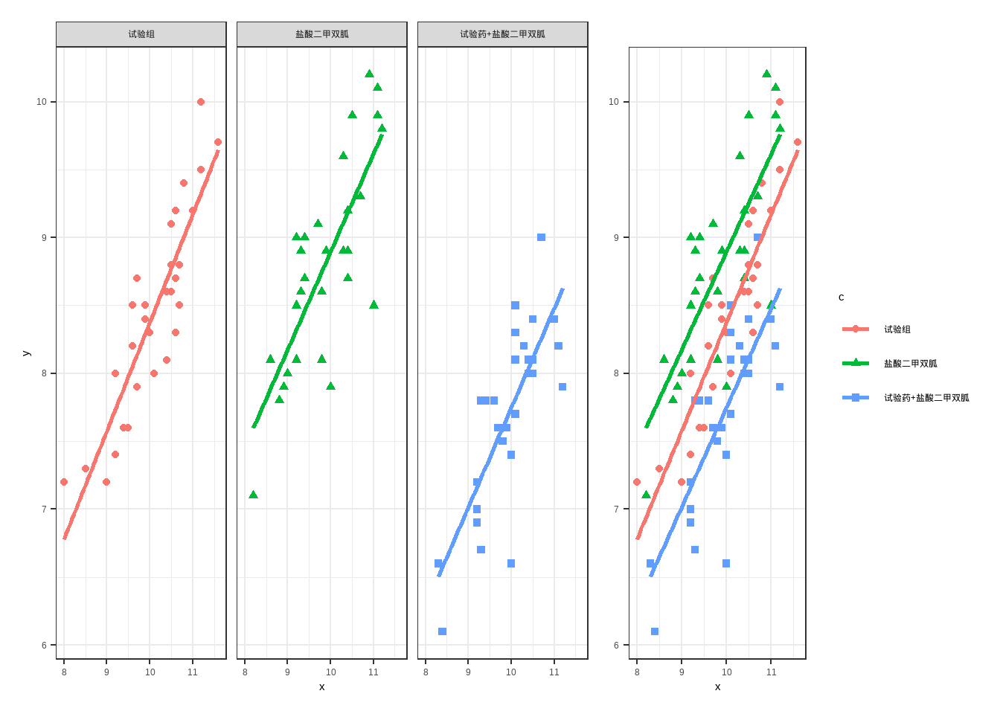

# data13_1 <- data.frame(x1=c(10.8,11.6,10.6,9.0,11.2,9.9,10.6,10.4,9.6,10.5,
# 10.6,9.9,9.5,9.7,10.7,9.2,10.5,11.0,10.1,10.7,8.5,
# 10.0, 10.4,9.7,9.4,9.2,10.5,11.2,9.6,8.0),
# y1=c(9.4,9.7,8.7,7.2,10.0,8.5,8.3,8.1,8.5,9.1,9.2,8.4,
# 7.6,7.9,8.8,7.4,8.6,9.2,8.0,8.5,7.3,8.3,
# 8.6,8.7,7.6,8.0,8.8,9.5,8.2,7.2),
# x2=c(10.4,9.7,9.9,9.8,11.1,8.2,8.8,10.0,9.0,9.4,8.9,
# 10.3,9.3,9.2,10.9,9.2,9.2,10.4,11.2,11.1,11.0,
# 8.6,9.3,10.3,10.3,9.8,10.5,10.7,10.4,9.4),
# y2=c(9.2,9.1,8.9,8.6,9.9,7.1,7.8,7.9,8.0,9.0,7.9,8.9,
# 8.9,8.1,10.2,8.5,9.0,8.9,9.8,10.1,8.5,8.1,8.6,
# 8.9,9.6,8.1,9.9,9.3,8.7,8.7),
# x3=c(9.8,11.2,10.7,9.6,10.1,9.8,10.1,10.3,11.0,10.5,
# 9.2,10.1,10.4,10.0,8.4,10.1,9.3,10.5,11.1,10.5,
# 9.7,9.2,9.3,10.4,10.0,10.3,9.9,9.4,8.3,9.2),
# y3=c(7.6,7.9,9.0,7.8,8.5,7.5,8.3,8.2,8.4,8.1,7.0,7.7,
# 8.0,6.6,6.1,8.1,7.8,8.4,8.2,8.0,7.6,6.9,6.7,
# 8.1,7.4,8.2,7.6,7.8,6.6,7.2)
# )
data13_1 <- foreign::read.spss("datasets/例13-01.sav",to.data.frame = T,
reencode = "gbk")
str(data13_1)
## 'data.frame': 90 obs. of 3 variables:
## $ x: num 10.8 11.6 10.6 9 11.2 9.9 10.6 10.4 9.6 10.5 ...
## $ y: num 9.4 9.7 8.7 7.2 10 8.5 8.3 8.1 8.5 9.1 ...
## $ c: Factor w/ 3 levels "试验组","盐酸二甲双胍",..: 1 1 1 1 1 1 1 1 1 1 ...
## - attr(*, "variable.labels")= Named chr [1:3] "入组前" "3个月后" "组别"
## ..- attr(*, "names")= chr [1:3] "x" "y" "c"18 协方差分析
协方差分析（analysis of covariance）是将线性回归分析与方差分析结合起来的一种统计分析方法。在方差分析中，影响观察指标Y（应变量）的往往是一些定性变量；而在线性回归分析中，影响Y的都是定量变量。协方差分析的基本思想就是将那些定量变量X（指未加或难以控制的因素）对Y的影响看作协变量（covariate），建立应变量Y随协变量X变化的线性回归关系，并利用这种回归关系把X值化为相等后再进行各组Y的修正均数（adjusted means）的比较，其实质是从Y的总平方和中扣除协变量X对Y的回归平方和，对残差平方和作进一步分解后再进行方差分析，以更好地评价处理因素的效应。
协变量可以有一个、两个、多个，分析方法略有不同，但解决问题的基本思想相同。
协方差分析有两个重要的应用条件：一是与方差分析的应用条件相同，即理论上要求观察变量服从正态分布，各观察变量相互独立，各样本的总体方差齐性；二是各总体客观存在应变量对协变量的线性回归关系且斜率相同（回归线平行），即要求各样本回归系数b本身有统计学意义而各样本回归系数b间的差别无统计学意义。
因此进行协方差分析时，必须先对样本资料进行方差齐性检验和回归系数的假设检验，若满足这两个条件或经变量变换后满足这两个条件，才可作协方差分析。
此外，协方差分析要求协变量是连续变量，而且不能是影响处理的变量，其取值应在研究之前被观察；或者虽在研究中被观察，但不能受到处理的影响。
如果在多因素研究中有一个或多个因素（协变量）不能或难以控制，而这个或这些协变量对观察变量可能有影响，解决这一类问题可用多元协方差分析方法（analysis of multiple covariance），也可用多元回归分析方法（multiple regression analysis）。
18.1 完全随机设计资料的协方差分析
使用孙振球《医学统计学》第4版例13-1的例子。
为研究某降血糖药物的有效性及其合用盐酸二甲双胍片的有效性，选择收治90例2型糖尿病患者，并采用随机对照试验，分为3种治疗组，第一组为该降糖药组，第二组为盐酸二甲双胍片组，第三组为该降糖药+盐酸二甲双胍片组，每组30例患者，治疗3个月，主要有效性指标为糖化血红蛋白。测得每例患者入组前（X和3个月后（Y）的糖化血红蛋白含量（%）。试分析3种治疗降糖化血红蛋白的效果是否不同。
一共3列，第1列是协变量x，第2列是因变量y，第3列是组别变量c。
进行单因素协方差分析：
# 注意公式的写法，aov使用1型平方和，要把协变量放在主变量前面！
fit <- aov(y ~ x + c, data = data13_1)
summary(fit)
## Df Sum Sq Mean Sq F value Pr(>F)
## x 1 29.06 29.057 171.20 <2e-16 ***
## c 2 19.85 9.925 58.48 <2e-16 ***
## Residuals 86 14.60 0.170
## ---
## Signif. codes: 0 '***' 0.001 '**' 0.01 '*' 0.05 '.' 0.1 ' ' 1得到的结果和书中是一模一样的(P206第4步)，组内ss=14.60，ms=0.170，v=86，修正均数ss=19.85，ms=9.925，v=2，F=58.48，拒绝H0，接受H1，可以认为在扣除初始（基线）糖化血红蛋白含量的影响后，3组患者的总体降糖均数有差别。
更好的方法是用car，且使用2型或者3型平方和，不用管主变量和协变量顺序：
suppressMessages(library(car))
model <- lm(y ~ c+x, data = data13_1)
Anova(model,type = 2)
## Anova Table (Type II tests)
##
## Response: y
## Sum Sq Df F value Pr(>F)
## c 19.851 2 58.48 < 2.2e-16 ***
## x 30.183 1 177.83 < 2.2e-16 ***
## Residuals 14.596 86
## ---
## Signif. codes: 0 '***' 0.001 '**' 0.01 '*' 0.05 '.' 0.1 ' ' 1看c和residuals的结果即可，与上述结果一致。
计算公共回归系数和调整均数，公共回归系数的计算方法如下：
# 即线性回归模型中x的系数
coef(model)["x"]
## x
## 0.751793修正均数（即调整均值）可以借助emmeans包实现：
library(emmeans)
adj_means <- emmeans(fit, "c")
adj_means
## c emmean SE df lower.CL upper.CL
## 试验组 8.36 0.0755 86 8.21 8.51
## 盐酸二甲双胍 8.88 0.0754 86 8.73 9.03
## 试验药+盐酸二甲双胍 7.73 0.0752 86 7.58 7.88
##
## Confidence level used: 0.95两两比较：
# 两两的方法可选：dunnett,tukey,bonferroni
contrast(adj_means,method = "pairwise", adjust = "tukey")
## contrast estimate SE df t.ratio p.value
## 试验组 - 盐酸二甲双胍 -0.521 0.107 86 -4.870 <.0001
## 试验组 - (试验药+盐酸二甲双胍) 0.628 0.107 86 5.888 <.0001
## 盐酸二甲双胍 - (试验药+盐酸二甲双胍) 1.149 0.106 86 10.797 <.0001
##
## P value adjustment: tukey method for comparing a family of 3 estimates
# 或者用以下方法，两种写法结果一致
#pairs(adj_means, adjust = "tukey")
警告注意
公共回归系数和调整均值与书中结果不同，我使用该官方提供的数据（例13-1.sav）用SPSS也计算了一遍，与R的结果一致，因此书中的结果可能是有误的，或者使用的数据不同。
结果的可视化可以使用HH包：
suppressPackageStartupMessages(library(HH))
ancovaplot(y ~ x + c, data = data13_1)
但其实我们也可以用ggplot2来画，可能更好看一点：
library(ggplot2)
theme_set(theme_bw())
p1 <- ggplot(data13_1, aes(x=x,y=y))+
geom_point(aes(color=c,shape=c))+
geom_smooth(method = "lm",se=F,aes(color=c))+
labs(y=NULL)
p2 <- ggplot(data13_1, aes(x=x,y=y))+
geom_point(aes(color=c,shape=c))+
geom_smooth(method = "lm",se=F,aes(color=c))+
facet_wrap(~c)
library(patchwork)
p2 + p1 + plot_layout(guides = 'collect',widths = c(3, 1))
好看是好看，但是很明显不如HH简洁啊！
下面补充一下如何进行协方差分析前的各种检验，注意，本研究是完全随机设计，因此独立性无需检验，独立性是通过研究设计保证的。
model <- lm(y ~ c+x, data = data13_1)
# 正态性检验
residuals_val <- residuals(model)
shapiro.test(residuals_val) # P>0.05，符合正态性
##
## Shapiro-Wilk normality test
##
## data: residuals_val
## W = 0.97613, p-value = 0.09629
# 方差齐性检验,# P>0.05，符合正态性
car::leveneTest(residuals_val ~ c, data = data13_1)
## Levene's Test for Homogeneity of Variance (center = median)
## Df F value Pr(>F)
## group 2 0.8692 0.4229
## 87斜率同质性和回归线平行可以通过看图观察，看上图3根先基本平行可认为符合斜率同质性和回归线平行。
18.2 随机区组设计资料的协方差分析
使用孙振球《医学统计学》第4版例13-2的数据。
为研究3种饲料对增加大白鼠体重的影响，按随机区组设计将初始体重相近的36只大白鼠分成12个区组，再将每个区组的3只大白鼠随机分入A、B、C三种饲料组，但在实验设计时未对大白鼠的进食量加以限制。3组大白鼠的进食量（X）和所增体重（Y）的原始资料如下。现欲推断3组大白鼠增重的总体均数是否有差别，同时要扣除进食量因素的影响。
data13_2 <- foreign::read.spss("datasets/例13-02.sav",to.data.frame = T,
reencode = "gbk")
data13_2$block <- factor(data13_2$block)
str(data13_2)
## 'data.frame': 36 obs. of 4 variables:
## $ x : num 257 272 210 300 262 ...
## $ y : num 27 41.7 25 52 14.5 48.8 48 9.5 37 56.5 ...
## $ group: Factor w/ 3 levels "A饲料","B饲料",..: 1 1 1 1 1 1 1 1 1 1 ...
## $ block: Factor w/ 12 levels "1","2","3","4",..: 1 2 3 4 5 6 7 8 9 10 ...
## - attr(*, "variable.labels")= Named chr [1:4] "进食量" "体重增加量" "饲料组别" "动物号"
## ..- attr(*, "names")= chr [1:4] "x" "y" "group" "block"
head(data13_2)
## x y group block
## 1 256.9 27.0 A饲料 1
## 2 271.6 41.7 A饲料 2
## 3 210.2 25.0 A饲料 3
## 4 300.1 52.0 A饲料 4
## 5 262.2 14.5 A饲料 5
## 6 304.4 48.8 A饲料 6进行随机区组设计的协方差分析：
fit <- aov(y ~ x + block + group, data = data13_2) # 注意变量顺序
summary(fit)
## Df Sum Sq Mean Sq F value Pr(>F)
## x 1 69073 69073 651.823 < 2e-16 ***
## block 11 4024 366 3.452 0.00711 **
## group 2 464 232 2.189 0.13692
## Residuals 21 2225 106
## ---
## Signif. codes: 0 '***' 0.001 '**' 0.01 '*' 0.05 '.' 0.1 ' ' 1看group的结果，还不能认为3种饲料对增加大白鼠体重有作用，尽管在没有扣除进食量影响时各组的平均增重看起来相差较大。
或者用car::Anova：
library(car)
model <- lm(y ~ group+x+block, data = data13_2)
Anova(model, type = 2)
## Anova Table (Type II tests)
##
## Response: y
## Sum Sq Df F value Pr(>F)
## group 463.9 2 2.1891 0.13692
## x 6174.2 1 58.2643 1.733e-07 ***
## block 3765.3 11 3.2302 0.01009 *
## Residuals 2225.4 21
## ---
## Signif. codes: 0 '***' 0.001 '**' 0.01 '*' 0.05 '.' 0.1 ' ' 1计算公共系数和调整均值：
coef(model)["x"] # 公共系数
## x
## 0.4088128
emmeans(model,"group") # 各组调整均值
## group emmean SE df lower.CL upper.CL
## A饲料 67.4 4.96 21 57.1 77.7
## B饲料 75.1 4.86 21 64.9 85.2
## C饲料 59.1 8.36 21 41.7 76.5
##
## Results are averaged over the levels of: block
## Confidence level used: 0.95